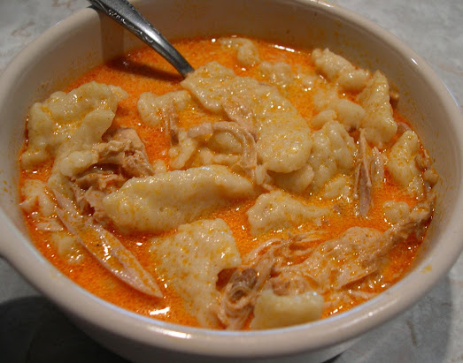

Chicken Paprikash Recipe
Home

Finished dish of chicken paprikash ready to serve!
Ingredients
- 3 Tbps vegetable oil
- 1 vidalia onion, chopped
- 1 whole cut up chicken (skin intact)
- 2 Tbsp sweet paprika
- 3 chicken bullion cubes (or more to taste; 1 per cup of water added)
Add later to broth
- 1 pt sour cream
- 1/2 pt water
- 4 Tbsp flour (or more to thicken based on preference)
- 3 tsp Lawry's seasoning salt
For the dumplings
- 4 eggs
- 3 cups of water
- 6 Cups all-purpose flour
- 1 tsp salt
Cooking Instructions
- If you have a pressure cooker, use it. If you dont, a regular big old pot will work just as well.
- Place the oil and chopped onion in a big pot. Cook over medium/high heat until translucent. (You don't want them brown, just tender.) Take off heat. Add the paprika. Mix it well.
- Put chicken parts in the pot and brown slightly with the onion/paprika mixture. (Do it in batches if you have to and add additional oil in small amounts if needed.)
- Add water to almost cover chicken. Bring to a boil, and add chicken bullion cubes (a good rule is don't cube for every one cup of water... just eyeball it). Also, add the Lawry's seasoning salt (if available). Not necessary, but to me, is the secret ingredient. Grandma didn't tell us about that until we saw her add it one day! ;) Cover and simmer for 25 minutes with a regular pot, or about 15-20 minutes with a pressure cooker.
- While the chicken is simmering, mix the sour cream, water, and flour together with a hand mixer or a Kitchen-Aid mixer. Whip it very smooth and set aside.
- When the chicken is done, remove the chicken pieces to a colander to cool. Slowly add the sour cream mixture, a little bit at a time to the broth, stirring constantly to incorporate into the broth.
OPTIONAL: You can de-bone the chicken or leave the pieces intact. I spoil everyone by skinning and de-boning it and adding it back to the sauce. Grandma always served the chicken pieces separate on a dish and whole. It is up to you how you like it. I always just went for the sauce over dumplings when I was a kid! ;)
- FOR THE DUMPLINGS: NOTE: THIS IS A DOUBLE BATCH. You will need to do a few batches or use half the dumpling ingredients.* Bring a large pot of water to a boil. In a mixer combine eggs, water, and flour and salt. Mix together to form a soupy dough. When water is boiling, scrape the dough into the water a spoonful at a time. This is easier if you dip the spoon onto the boiling water so the dough will not stick to the spoon. After you scrape the dough into the boiling water, they should cook for about 7 minutes. When they rise to the surface, they are done. Drain and rinse.
- Serve up a big helping of dumplings and pour sauce over them. Serve with the whole chicken pieces, or if you de-bone it, it will be placed in the sauce.